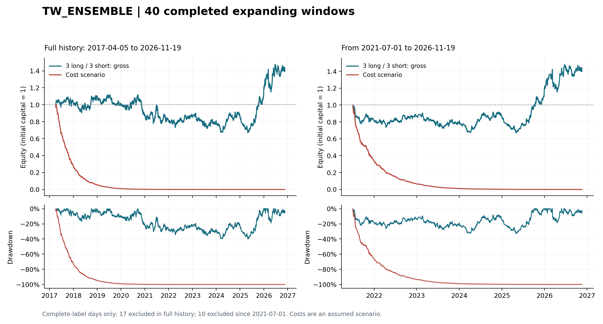
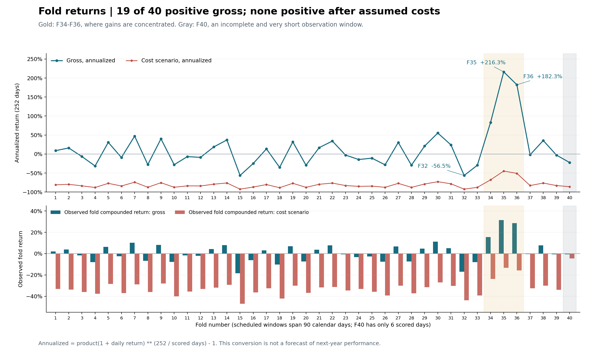
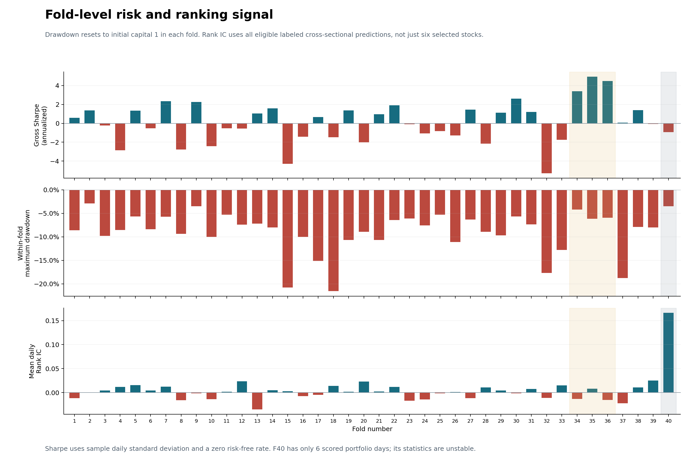
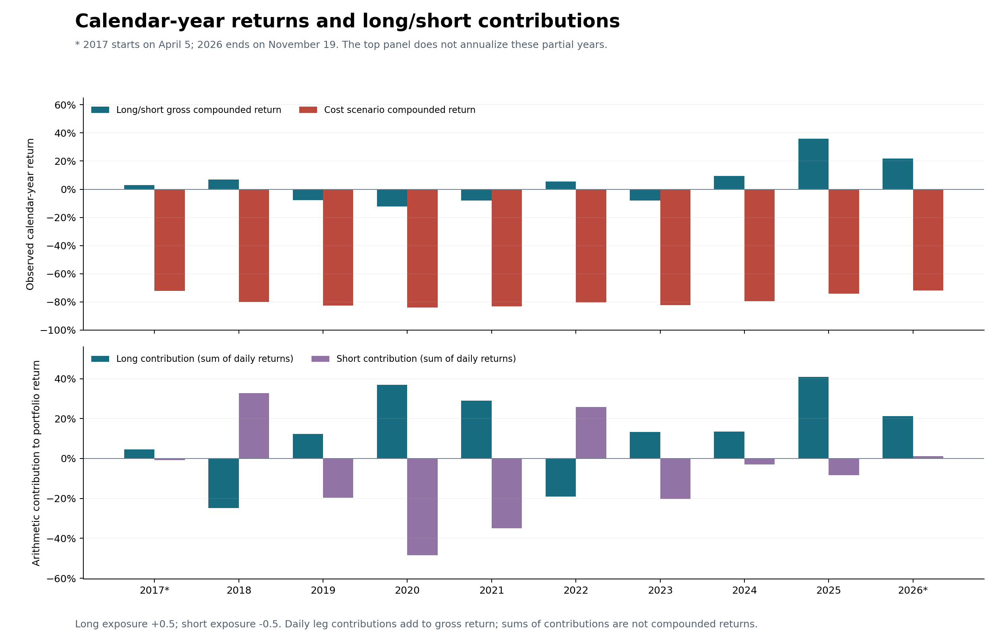
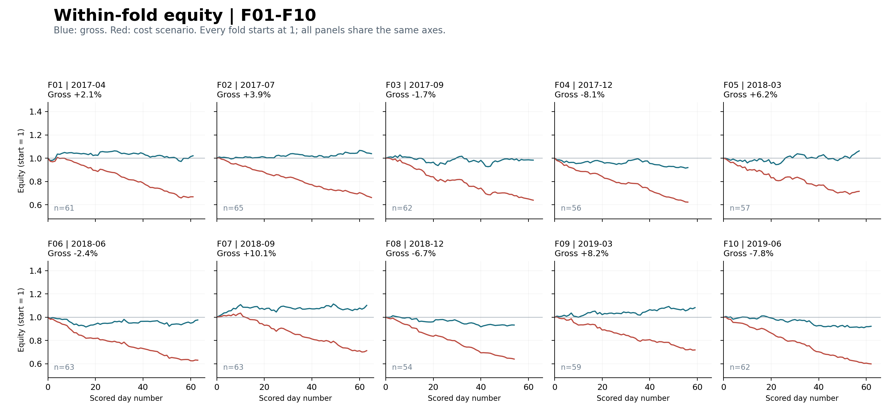
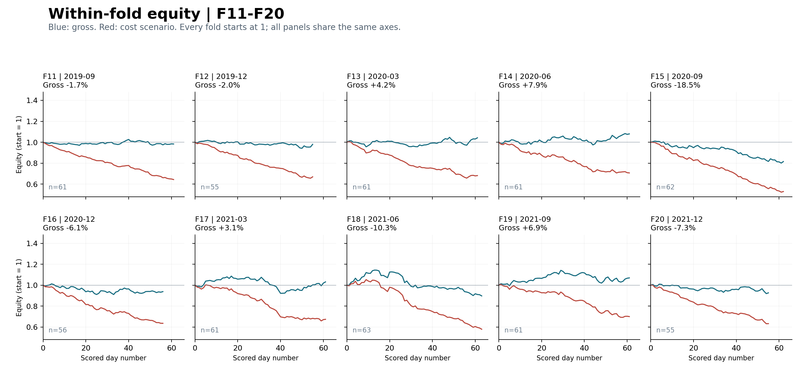
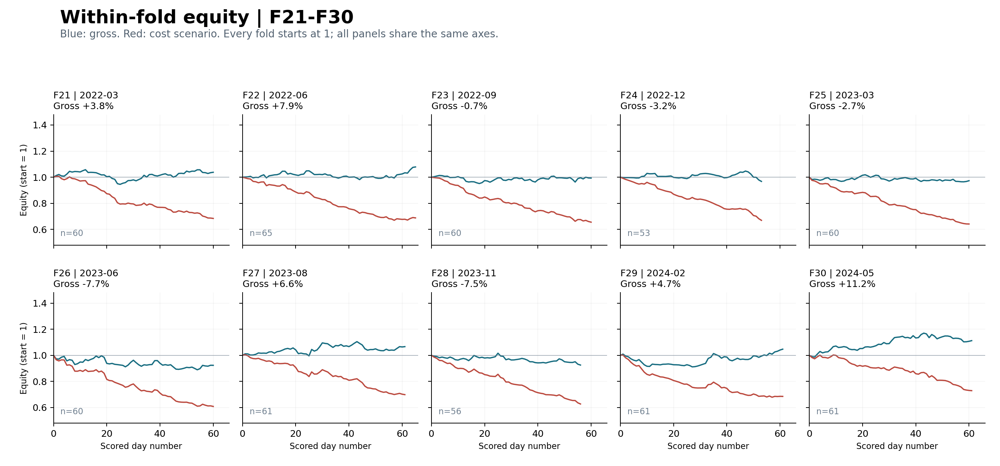
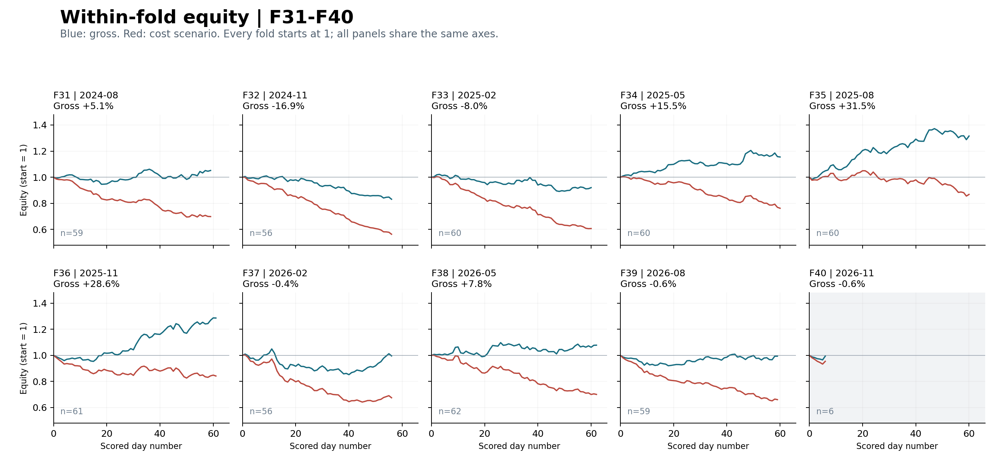

TW_ENSEMBLE
Taiwan transfer learning: complete backtest analysis. Published 2026-11-25.
English PDF | HTML report | Fold metrics | Final model
Executive conclusion
The recorded 3-long / 3-short strategy earns a positive gross compounded return, but it does not cover the assumed transaction costs. Only 19 of 40 folds have a positive gross return; none is positive in the cost scenario. Profits are concentrated in F34-F36, while most training windows retain their incoming weights.
| Period | Portfolio | Days | Compounded return | Annualized return | Sharpe | Max drawdown |
|---|---|---|---|---|---|---|
| Full history | Gross | 2334 | +43.17% | +3.95% | 0.300 | -40.00% |
| Full history | Cost scenario | 2334 | -99.999987% | -81.91% | -9.029 | -100.00% |
| From 2021-07-01 | Gross | 1302 | +43.67% | +7.26% | 0.453 | -32.74% |
| From 2021-07-01 | Cost scenario | 1302 | -99.982819% | -81.32% | -8.353 | -99.98% |
Full-history scored signals run from 2017-04-05 through 2026-11-19, with returns realized through 2026-11-23. There are 2,334 complete dates and 17 excluded dates. The exact signal-date slice from 2021-07-01 contains 1,302 complete dates and 10 excluded dates.
All annualized returns use 252 scored days per year. Days without complete selected-position labels are excluded, not assigned zero returns. These are research results conditional on complete-label dates, not a complete executable calendar-time NAV.
The Japanese checkpoint used training/validation information through June 2021. The early period is a retrospective transfer diagnostic. The later slice avoids that known checkpoint timing mismatch, but model architecture and strategy choices were still made retrospectively.
Model, execution and expanding-window design
TW_ENSEMBLE is the Taiwan transfer run of the JPX no-ReLU ENSEMBLE architecture: GRU, RNN and LSTM final hidden states are averaged, followed by dropout and two linear layers (128 to 32 to 1), with no added ReLU between those dense layers. The exact source is included in source/models.py.
| Item | Recorded setting |
|---|---|
| Completed run | Kaggle version 1; 40 / 40 folds; 2 x Tesla T4 |
| Completion time | 2026-11-25 16:08:36 Asia/Taipei (08:08:36 UTC) |
| Observed run duration | 7,621.4 seconds, approximately 2 hours 7 minutes |
| Lookback and features | 21 observations; Open, High, Low, Close, Volume, ExpectedDividend |
| Architecture | Hidden size 128; one recurrent layer per branch; dropout 0.2 |
| Preprocessing | Original JPX scaler frozen; missing ExpectedDividend filled with zero |
| Expanding training origin | 2017-01-03 |
| First outer test window | Starts 2017-04-03; advances by 90 calendar days |
| Inner early-stop validation | 30 calendar days immediately before each outer test start |
| Label purging | Training labels finish before inner validation; validation labels finish before outer test |
| Optimizer and loss | New Adam for Taiwan transfer; learning rate 0.001; Huber delta 1 |
| Batch and stopping | Global batch 4,096; max 50 epochs; patience 10; min_delta 0.00001 |
| State carried between folds | Best selected model and Adam optimizer state |
| GPU execution | DataParallel; float32 with TF32; gradient norm clip 1; shuffle=False |
| Seed | 20261125 |
| Runtime | Python 3.13.16; PyTorch 2.11.0+cu130; CUDA 13.0; NumPy 2.1.3; pandas 2.3.3 |
This publication analyzes the completed run; it does not retrain, change hyperparameters or select a replacement model using the outer test returns. GPU kernels and parallel execution can prevent bitwise-identical results in a future rerun.
Data audit and evaluation coverage
| Audit item | Result |
|---|---|
| Source rows / stock codes | 4,461,650 / 2,081 |
| Source date range | 2017-01-03 through 2026-11-23 |
| Source trading dates | 2,408 |
| Duplicate stock-date pairs | 0 |
| Rows with missing OHLC | 142,163 |
| Missing targets | 221,032 |
| Comparable target checks | 4,240,618 matches; 0 mismatches |
| Absolute target > 20% / > 50% | 422 / 192 |
| Prediction rows across outer folds | 3,843,443 |
| Full-history complete / excluded dates | 2,334 / 17 |
| From 2021-07-01 complete / excluded dates | 1,302 / 10 |
Targets are computed within each stock as Close[t+2] / Close[t+1] / AdjustmentFactor[t+2] - 1. The supplied target was independently recomputed and matched on all 4,240,618 comparable rows. For scored positions, entry and exit labels must correspond to consecutive global trading dates.
Selection happens before checking target availability. If any selected position has a missing or nonconsecutive label, the whole date is excluded. The strategy never substitutes a different stock because a selected target is missing.
The dataset documentation explicitly states that its stock universe was obtained from the then-current listing universe. Delisted and otherwise removed companies are not fully represented, so survivorship bias remains. Cash dividends, capital reductions and stock splits are not fully adjusted by the supplied construction.
Sources: pinned dataset files and pinned dataset documentation.
Portfolio construction and cost assumptions
- After signal-day t close, rank predictions and buy the three highest-ranked stocks while shorting the three lowest-ranked stocks.
- Within each side, rank weights are proportional to 2 : 1.5 : 1. Long exposure is +0.5, short exposure is -0.5, and total absolute exposure is 1.
- The target-return proxy assumes entry at t+1 close and exit at t+2 close. Each daily tranche is fully opened and closed; no cross-day turnover netting is applied.
- Costs use opening and adjusted closing notionals. Sell-side tax is charged on sales, and borrow cost uses actual calendar holding days.
| Cost parameter | Assumption |
|---|---|
| Commission per side | 0.1425% |
| Sell-side tax | 0.3% |
| Slippage per side | 0.05% (5 bps) |
| Annualized short borrow fee | 3% |
| Average full-history daily cost | 0.6915%, approximately 69.15 bps |
These are scenario parameters, not verified account-specific fees or a fill simulation. Historical shortability, daily limit constraints and executable auction prices are not established by these data.
Net scenario return on each scored date equals the gross portfolio return minus that date's modeled cost. The full-history average gross return is only 2.23 bps per day; from 2021-07-01 it is 3.56 bps per day. Both are far below the assumed average daily cost.
Equity curves and drawdown

The two periods are independently rebased to initial capital 1. Red curves apply the stated cost scenario. Missing selected-label dates are excluded.
How often is a fold profitable?
| Statistic | All 40 folds | From 2021-07-01: 23 segments |
|---|---|---|
| Positive gross return | 19 / 40 (47.5%) | 11 / 23 (47.8%) |
| Positive cost-scenario return | 0 / 40 | 0 / 23 |
| Median fold gross compounded return | -0.53% | -0.45% |
| Median fold gross annualized return | -2.37% | -2.01% |
| Median fold gross Sharpe | 0.007 | 0.070 |
| Folds with positive mean daily Rank IC | 24 / 40 | 14 / 23 |
| Positive long-only gross fold return | 26 / 40 | 13 / 23 |
| Daily gross positive-return frequency | 49.79% | 50.23% |
The later group includes only the portion of F18 from July 1 onward, all of F19-F39, and the short F40 tail. It is not a set of 23 full 90-day windows. All 23 segments are recomputed from daily returns after the exact cutoff.
The longest gross winning streak is three folds, including F29-F31 and F34-F36. The longest gross losing streak is four folds, F23-F26. A profitable fold and an accepted training update measure different outcomes.
Annualized return in every fold

The upper panel annualizes each fold separately; the lower panel shows its actual observed compounded return.
Annualized return = product(1 + daily return) ** (252 / scored days) - 1. Fold annualized returns cannot be averaged to obtain the full-history annualized return. F1-F39 have 53-65 scored dates each. F40 has only six: its -0.60% observed return becomes -22.43% when annualized. This is a conversion, not a forecast.
Best and worst folds; concentration of gains
| Group | Fold | Scored signal dates | Days | Gross return | Annualized |
|---|---|---|---|---|---|
| Best | F35 | 2025-08-19 to 2025-11-14 | 60 | +31.54% | +216.28% |
| Best | F36 | 2025-11-17 to 2026-02-11 | 61 | +28.56% | +182.32% |
| Best | F34 | 2025-05-21 to 2025-08-18 | 60 | +15.47% | +82.99% |
| Worst | F15 | 2020-09-14 to 2020-12-11 | 62 | -18.46% | -56.37% |
| Worst | F32 | 2024-11-22 to 2025-02-19 | 56 | -16.88% | -56.48% |
| Worst | F18 | 2021-06-11 to 2021-09-08 | 63 | -10.26% | -35.13% |
F34-F36 together compound to +95.28% gross. Linking the remaining 37 folds produces -26.68%. These three folds were identified retrospectively as the best gross-return folds; this diagnostic does not imply that they could have been selected in advance.
A fixed calendar split tells a similar story: before 2025 the gross compounded return is -13.52%, while from 2025 onward it is +65.55%. The positive full-history outcome is therefore not evidence of consistently profitable periods.
F15 has the worst observed fold loss (-18.46%). F32 has the worst annualized fold return (-56.48%), because its effective observation length differs from F15.
Fold-level risk and ranking signal

Within-fold drawdown resets at the start of each fold. Full-path drawdown can be deeper across fold boundaries.
Rank IC is the daily Spearman correlation across eligible stocks with valid labels. Its coverage differs from the six selected positions and from the set of complete portfolio dates. F40 is especially short. Positive mean IC and positive top/bottom-tail portfolio returns need not coincide.
What actually changed during continuation training?
Every fold executed gradient training, but only F3 epoch 1 passed the fixed validation improvement threshold. In the other 39 folds, best_epoch = 0 means the incoming model was retained after training. From F3 onward, the selected weights did not change again. Sixteen parameter tensors in the final checkpoint differ from the original Japanese checkpoint.
F3 itself earns -1.66% gross in its outer test window. F34-F36 do not select new weights. Their stronger returns therefore cannot be described as evidence that new updates in those windows improved the model.
| Prediction metric | Full history | From 2021-07-01 |
|---|---|---|
| Mean daily Rank IC | 0.001009 | 0.002086 |
| Model MAE | 0.015689 | 0.016452 |
| Zero-return baseline MAE | 0.015640 | 0.016443 |
Average rank correlations are close to zero, and MAE is slightly worse than predicting a zero return. These measures assess the broad prediction universe; they are distinct from tail-portfolio returns. This publication reports the original metrics without tuning on outer-test performance.
Calendar-year performance and long/short contributions

The top panel shows actual observed calendar-year returns. The lower panel sums weighted daily leg contributions; these sums are not compounded returns.
Annual results and the cost budget
| Year | Scored days | Gross return | Cost-scenario return | Gross Sharpe | Within-year drawdown |
|---|---|---|---|---|---|
| 2017* | 189 | +2.85% | -72.26% | 0.310 | -9.80% |
| 2018 | 243 | +6.79% | -80.16% | 0.486 | -12.74% |
| 2019 | 240 | -7.85% | -82.59% | -0.586 | -11.50% |
| 2020 | 244 | -12.32% | -83.92% | -0.638 | -21.87% |
| 2021 | 244 | -8.16% | -83.14% | -0.275 | -21.98% |
| 2022 | 243 | +5.52% | -80.40% | 0.424 | -11.08% |
| 2023 | 238 | -8.14% | -82.40% | -0.401 | -20.03% |
| 2024 | 241 | +9.47% | -79.43% | 0.618 | -16.99% |
| 2025 | 240 | +35.77% | -74.31% | 1.657 | -22.50% |
| 2026* | 212 | +21.93% | -71.97% | 1.097 | -18.77% |
- 2017 begins on April 5 and 2026 ends on November 19. Returns in this table are not annualized. Dates are assigned to years by signal date.
| Period | Long bps/day | Short bps/day | Gross bps/day | Cost bps/day |
|---|---|---|---|---|
| Full history | +5.48 | -3.25 | +2.23 | +69.15 |
| From 2021-07-01 | +4.61 | -1.05 | +3.56 | +69.14 |
One basis point (bps) equals 0.01%. The short leg has a negative average contribution over both periods. These are arithmetic contributions at long +0.5 / short -0.5 exposure, not standalone compounded performance.
For a hypothetical identical cost deducted every scored day, the ex-post break-even charge is 1.54 bps/day over full history and 2.78 bps/day in the later slice. It is solved from product(1 + gross return - constant cost) = 1, not from arithmetic average return. It is not a live fee quote or a forward-looking cost allowance.
Other portfolios and extreme-label sensitivity
| Period | Gross portfolio / sensitivity | Compounded return | Annualized | Sharpe | Max drawdown |
|---|---|---|---|---|---|
| Full history | Top 3 long-only | +485.08% | +21.01% | 0.668 | -57.40% |
| Full history | Long/short, targets clipped +/-20% | +43.62% | +3.99% | 0.302 | -39.81% |
| Full history | Equal weight, available labels | +114.10% | +8.57% | 0.567 | -32.49% |
| From 2021-07-01 | Top 3 long-only | +96.50% | +13.97% | 0.515 | -57.40% |
| From 2021-07-01 | Long/short, targets clipped +/-20% | +44.12% | +7.33% | 0.456 | -32.53% |
| From 2021-07-01 | Equal weight, available labels | +26.62% | +4.67% | 0.343 | -30.56% |
The long-only and equal-weight comparisons have different exposure and risk structures from the zero-net-exposure long/short strategy. All figures in this table are before costs; the equal-weight series covers the supplied available-label universe and is not a market index or a complete tradable benchmark.
The source contains 422 targets with absolute returns over 20%, and 192 over 50%. One extreme label is selected by the strategy. Clipping individual targets at +/-20% is a sensitivity analysis, not a repair of the main data. It leaves the principal conclusion unchanged.
Within-fold equity paths: F01-F10

All panels use the same axes. Each fold starts at 1. Blue is gross return; red applies the cost scenario. Gray F40 is the short terminal window.
Within-fold equity paths: F11-F20

All panels use the same axes. Each fold starts at 1. Blue is gross return; red applies the cost scenario. Gray F40 is the short terminal window.
Within-fold equity paths: F21-F30

All panels use the same axes. Each fold starts at 1. Blue is gross return; red applies the cost scenario. Gray F40 is the short terminal window.
Within-fold equity paths: F31-F40

All panels use the same axes. Each fold starts at 1. Blue is gross return; red applies the cost scenario. Gray F40 is the short terminal window.
Complete fold detail: F01-F20
| Fold | Scored signal dates | Days | Excluded | Gross | Gross ann. | Net scenario | Net ann. | Sharpe | Max DD | Mean IC | Best epoch |
|---|---|---|---|---|---|---|---|---|---|---|---|
| F01 | 2017-04-05 to 2017-06-30 | 61 | 0 | +2.07% | +8.84% | -33.13% | -81.03% | 0.590 | -8.58% | -0.0114 | 0 |
| F02 | 2017-07-03 to 2017-09-29 | 65 | 0 | +3.89% | +15.94% | -33.78% | -79.76% | 1.378 | -2.89% | 0.0000 | 0 |
| F03 | 2017-09-30 to 2017-12-28 | 62 | 0 | -1.66% | -6.58% | -36.05% | -83.75% | -0.232 | -9.80% | 0.0046 | 1 |
| F04 | 2017-12-29 to 2018-03-28 | 56 | 0 | -8.07% | -31.52% | -37.68% | -88.10% | -2.867 | -8.53% | 0.0121 | 0 |
| F05 | 2018-03-29 to 2018-06-26 | 57 | 3 | +6.24% | +30.67% | -28.45% | -77.23% | 1.342 | -5.64% | 0.0155 | 0 |
| F06 | 2018-06-27 to 2018-09-21 | 63 | 0 | -2.38% | -9.19% | -36.90% | -84.15% | -0.533 | -8.40% | 0.0045 | 0 |
| F07 | 2018-09-25 to 2018-12-22 | 63 | 1 | +10.14% | +47.15% | -28.71% | -74.17% | 2.361 | -5.73% | 0.0122 | 0 |
| F08 | 2018-12-24 to 2019-03-22 | 54 | 0 | -6.73% | -27.76% | -35.94% | -87.49% | -2.772 | -9.37% | -0.0155 | 0 |
| F09 | 2019-03-25 to 2019-06-21 | 59 | 2 | +8.20% | +40.01% | -28.09% | -75.55% | 2.253 | -3.50% | -0.0012 | 0 |
| F10 | 2019-06-24 to 2019-09-19 | 62 | 0 | -7.80% | -28.11% | -40.07% | -87.52% | -2.411 | -9.99% | -0.0137 | 0 |
| F11 | 2019-09-20 to 2019-12-18 | 61 | 0 | -1.70% | -6.84% | -35.63% | -83.80% | -0.527 | -5.28% | 0.0017 | 0 |
| F12 | 2019-12-19 to 2020-03-17 | 55 | 0 | -2.00% | -8.85% | -33.04% | -84.08% | -0.561 | -7.42% | 0.0238 | 0 |
| F13 | 2020-03-18 to 2020-06-15 | 61 | 0 | +4.22% | +18.60% | -31.85% | -79.48% | 1.036 | -7.17% | -0.0352 | 0 |
| F14 | 2020-06-16 to 2020-09-11 | 61 | 1 | +7.92% | +37.01% | -29.31% | -76.14% | 1.603 | -7.99% | 0.0049 | 0 |
| F15 | 2020-09-14 to 2020-12-11 | 62 | 0 | -18.46% | -56.37% | -47.07% | -92.47% | -4.299 | -20.75% | 0.0027 | 0 |
| F16 | 2020-12-14 to 2021-03-12 | 56 | 0 | -6.14% | -24.82% | -36.41% | -86.96% | -1.421 | -10.03% | -0.0075 | 0 |
| F17 | 2021-03-15 to 2021-06-10 | 61 | 0 | +3.12% | +13.52% | -32.58% | -80.38% | 0.666 | -15.11% | -0.0044 | 0 |
| F18 | 2021-06-11 to 2021-09-08 | 63 | 0 | -10.26% | -35.13% | -42.04% | -88.71% | -1.483 | -21.55% | 0.0142 | 0 |
| F19 | 2021-09-09 to 2021-12-07 | 61 | 0 | +6.93% | +31.91% | -29.97% | -77.05% | 1.375 | -10.66% | 0.0016 | 0 |
| F20 | 2021-12-08 to 2022-03-07 | 55 | 0 | -7.33% | -29.45% | -36.72% | -87.71% | -2.026 | -8.94% | 0.0230 | 0 |
Net denotes the stated cost scenario. Sharpe and maximum drawdown are gross and reset by fold. Best epoch 0 means the incoming weights were retained, not that training was skipped. The exact later-period slice is in data/fold_metrics_from_2021_H2.csv.
Complete fold detail: F21-F40
| Fold | Scored signal dates | Days | Excluded | Gross | Gross ann. | Net scenario | Net ann. | Sharpe | Max DD | Mean IC | Best epoch |
|---|---|---|---|---|---|---|---|---|---|---|---|
| F21 | 2022-03-08 to 2022-06-02 | 60 | 0 | +3.76% | +16.78% | -31.58% | -79.69% | 0.975 | -10.64% | 0.0024 | 0 |
| F22 | 2022-06-06 to 2022-09-02 | 65 | 0 | +7.85% | +34.05% | -31.18% | -76.51% | 1.926 | -6.44% | 0.0118 | 0 |
| F23 | 2022-09-05 to 2022-12-02 | 60 | 3 | -0.66% | -2.76% | -34.44% | -83.03% | -0.098 | -6.10% | -0.0166 | 0 |
| F24 | 2022-12-05 to 2023-03-02 | 53 | 0 | -3.24% | -14.50% | -33.05% | -85.16% | -1.066 | -7.58% | -0.0143 | 0 |
| F25 | 2023-03-03 to 2023-05-31 | 60 | 0 | -2.70% | -10.86% | -35.85% | -84.51% | -0.811 | -5.29% | -0.0012 | 0 |
| F26 | 2023-06-01 to 2023-08-29 | 60 | 1 | -7.65% | -28.43% | -39.16% | -87.59% | -1.275 | -11.07% | 0.0011 | 0 |
| F27 | 2023-08-30 to 2023-11-27 | 61 | 0 | +6.64% | +30.43% | -30.11% | -77.24% | 1.459 | -6.30% | -0.0115 | 0 |
| F28 | 2023-11-28 to 2024-02-23 | 56 | 0 | -7.45% | -29.43% | -37.27% | -87.74% | -2.146 | -8.93% | 0.0106 | 0 |
| F29 | 2024-02-26 to 2024-05-24 | 61 | 0 | +4.71% | +20.95% | -31.47% | -79.01% | 1.115 | -9.67% | 0.0044 | 0 |
| F30 | 2024-05-27 to 2024-08-23 | 61 | 1 | +11.24% | +55.25% | -27.07% | -72.86% | 2.625 | -5.68% | -0.0013 | 0 |
| F31 | 2024-08-26 to 2024-11-21 | 59 | 0 | +5.15% | +23.91% | -30.16% | -78.42% | 1.209 | -7.33% | 0.0075 | 0 |
| F32 | 2024-11-22 to 2025-02-19 | 56 | 0 | -16.88% | -56.48% | -43.69% | -92.46% | -5.299 | -17.69% | -0.0109 | 0 |
| F33 | 2025-02-20 to 2025-05-20 | 60 | 0 | -8.00% | -29.54% | -39.32% | -87.73% | -1.738 | -12.79% | 0.0149 | 0 |
| F34 | 2025-05-21 to 2025-08-18 | 60 | 3 | +15.47% | +82.99% | -23.79% | -68.05% | 3.398 | -4.17% | -0.0130 | 0 |
| F35 | 2025-08-19 to 2025-11-14 | 60 | 0 | +31.54% | +216.28% | -13.19% | -44.81% | 4.955 | -6.14% | 0.0080 | 0 |
| F36 | 2025-11-17 to 2026-02-11 | 61 | 0 | +28.56% | +182.32% | -15.84% | -50.95% | 4.488 | -5.91% | -0.0155 | 0 |
| F37 | 2026-02-23 to 2026-05-15 | 56 | 0 | -0.45% | -2.01% | -32.52% | -82.96% | 0.070 | -18.77% | -0.0223 | 0 |
| F38 | 2026-05-18 to 2026-08-13 | 62 | 0 | +7.76% | +35.51% | -29.94% | -76.46% | 1.393 | -7.87% | 0.0109 | 0 |
| F39 | 2026-08-14 to 2026-11-11 | 59 | 0 | -0.65% | -2.74% | -33.95% | -82.99% | -0.057 | -7.98% | 0.0254 | 0 |
| F40 | 2026-11-12 to 2026-11-19 | 6 | 2 | -0.60% | -22.43% | -4.58% | -86.05% | -0.932 | -3.51% | 0.1664 | 0 |
Net denotes the stated cost scenario. Sharpe and maximum drawdown are gross and reset by fold. Best epoch 0 means the incoming weights were retained, not that training was skipped. The exact later-period slice is in data/fold_metrics_from_2021_H2.csv.
Selection concentration
The six positions on each of 2,334 scored dates produce 14,004 selected-position records and 391 distinct stock codes. The following table ranks stock-code / direction pairs by selected-day count.
| Stock code | Direction | Selected days | Share of all slots | Arithmetic contribution |
|---|---|---|---|---|
| 3481 | long | 579 | 4.1% | +25.53% |
| 3481 | short | 576 | 4.1% | +2.89% |
| 3008 | short | 520 | 3.7% | -4.85% |
| 2303 | short | 475 | 3.4% | -16.75% |
| 2409 | long | 473 | 3.4% | -3.39% |
| 2303 | long | 428 | 3.1% | +13.57% |
| 2409 | short | 419 | 3.0% | -11.45% |
| 2344 | long | 291 | 2.1% | +21.33% |
| 2888 | long | 272 | 1.9% | -1.46% |
| 2344 | short | 261 | 1.9% | +7.30% |
Arithmetic contribution is the sum of position weight times stock return over selected dates. It is not the stock's standalone compounded return or cash profit. Long and short appearances of the same code are separate rows. The complete selection table and daily positions are included.
Interpretation limits
- Checkpoint timing: source Japanese training ended on 2021-03-08 and validation on 2021-06-08. Pre-July-2021 results do not establish performance of a model that was available at the historical signal time.
- Retrospective design: the architecture, strategy and dataset were selected after the historical periods. Even the later slice is not a fully prospective live test.
- Survivorship bias: the supplied dataset documentation states that the universe uses companies still listed at extraction time; historical delistings and removals are incomplete.
- Corporate actions and income: ExpectedDividend is entirely missing and filled with zero. The target excludes cash dividends and does not fully account for capital reductions, stock splits or all exceptional events.
- Execution and borrowing: historical short availability, borrow constraints, price-limit locks, auction fills and delisting cash flows are not verified.
- Missing labels: entire unresolved selected-position dates are excluded. Results are conditional on complete dates and can differ from a fully realized portfolio.
- Short windows: fold annualization and Sharpe are noisy. F40 contains only six scored days; partial calendar years and the partial F18 cutoff must not be treated as full windows.
- Concentration analysis: the best three folds were identified after observing results. Removing or keeping them is descriptive and is not an implementable selection rule.
- No tuning claim: no hyperparameters were changed or new models selected while writing this English analysis.
Verification and artifact provenance
- All 40 outer test windows are disjoint; training and inner-validation label completion dates precede the next evaluation boundary.
- Daily selected-position returns and the stated cost formula were independently reconstructed. Rank selection was checked on 40 spread-out dates.
- Compounding all fold returns reproduces both original period totals. Complete and excluded date counts reconcile exactly.
- Long and short contributions sum to the daily gross portfolio return. Annualized and unannualized fold return signs agree.
- The training script, architecture source, source data archive and initial weights match the SHA-256 recorded by the completed Kaggle run.
- The final checkpoint hash is verified; 16 parameter tensors differ from the initial checkpoint.
| Artifact | SHA-256 |
|---|---|
| Source data ZIP | 1669cff3363ee845eaab96fb2482e909719e8b042f622debc5d6ea900bbcc036 |
| Initial Japanese checkpoint | 0799f7efc93712944624417d2054a922e36849d5c57df754ddae559b8bd6ff0e |
| Executed training script | 46748ac90eaa573f4aae5936aaa7a37589aa7fa7bdbcf659066b22d9bb25466d |
| Architecture source | dd13b52cbc51c0d153d65f9ba9a80069300906b7cfe394fa1e9cb2448d88ebb4 |
| Final Taiwan checkpoint | ebf9141260d4a3cdbe547a943f394ced685fd897cf3da69ee587d91049a8ae86 |
| Original complete run export ZIP | 330c3ac26eb66d8d5d58639d6b9269bcc7fe3015b8988a9a45849ef0e8272d41 |
The publication includes daily portfolio data, selected positions, daily IC, fold and annual metrics, epoch history, audit and configuration files, both initial and final checkpoints, and the exact training source. Per-stock prediction Parquet files, all intermediate fold checkpoints and the resume checkpoint are retained in the original Kaggle export, not duplicated in this analysis directory.
The recorded Kaggle run is private and requires authorized account access. The initial-model notebook and pinned dataset links identify the inputs. This is not a Kaggle competition leaderboard result.
Files and reproduction
| Path | Purpose |
|---|---|
| README.md | Complete English report rendered directly by GitHub |
| TW_ENSEMBLE_Backtest_Report_EN.pdf | Portable English report |
| report.html | English HTML report; keep the figures directory alongside it |
| figures/ | English PNG and SVG figures |
| data/ | Daily, fold, yearly, selection, audit and provenance tables |
| model/ | Original Japanese checkpoint and final Taiwan checkpoint |
| source/train_tw.py; source/models.py | Exact source executed on Kaggle |
| source/TW_ENSEMBLE_Kaggle.ipynb | Prepared Kaggle notebook |
| source/build_analysis.py; source/build_pdf.py | Rebuild English report and figures without retraining |
| source/verify_results.py | Recheck published calculations, provenance and model differences |
| manifest.json | Publication file sizes and SHA-256 checksums |
From this result directory, install analysis dependencies and rebuild the English outputs:
python -m pip install -r source/requirements-analysis.txt
python source/verify_results.py
python source/build_analysis.py
python source/build_pdf.py
To rerun training separately, install compatible GPU dependencies, reassemble the pinned dataset ZIP, and choose a fresh output directory:
python -m pip install -r source/requirements-training.txt
python source/train_tw.py --data /path/to/stock_price_final.zip \
--weights model/JPX_ENSEMBLE_initial.pt --output /path/to/new_run
The archived final checkpoint contains model_state_dict, scaler and config. Load it with torch.load(..., weights_only=True), instantiate ENSEMBLE(6, 128, 1), and load model_state_dict strictly. Preserve the frozen scaler and original feature construction for inference; this checkpoint does not by itself supply a live execution system.